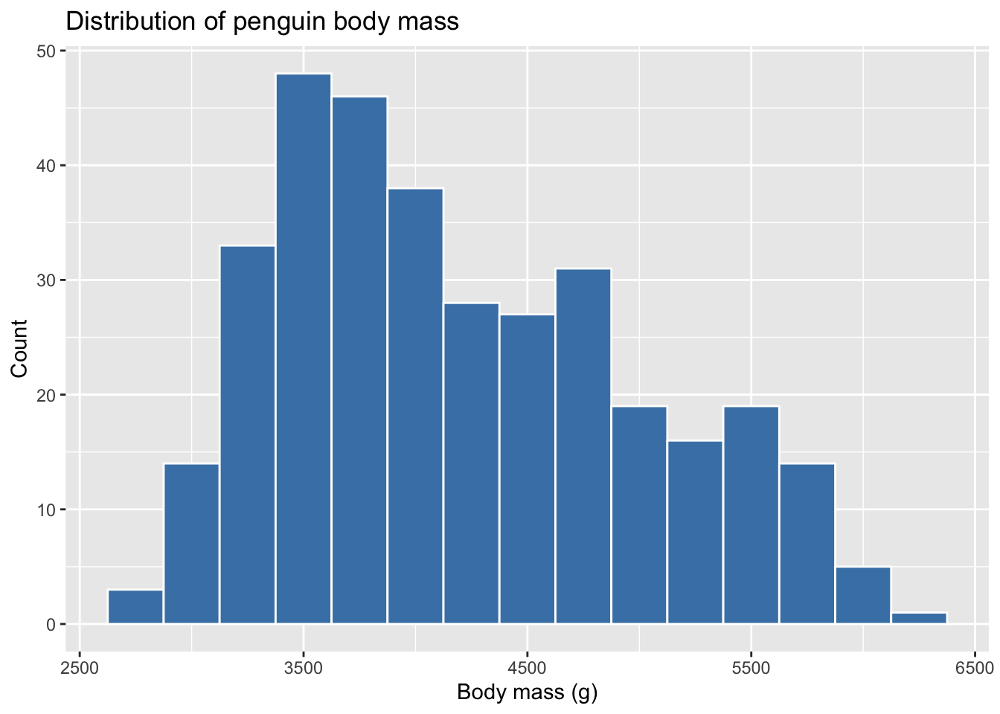

ggplot(penguins, aes(x = body_mass_g)) +
geom_histogram(binwidth = 250, fill = "steelblue", color = "white") +
labs(
title = "Distribution of penguin body mass",
x = "Body mass (g)",
y = "Count"
)
YOUR NAME HERE
May 21, 2026
TODO: Write your introduction here.

TODO: Write your description of the plot here.
If you finish early, try one or more of these.
Pick a different numeric variable from penguins and make a histogram of it. Some options: flipper_length_mm, bill_length_mm, bill_depth_mm.
Add a new code chunk (Cmd/Ctrl + Alt + I) and copy the histogram code, then change the variable name and the labels.
Change format: html to format: docx in the YAML header at the top, then re-render. What happens?
Add a new code chunk somewhere and put this code in it:
Re-render and see what shows up.
In the YAML header, add:
Re-render. What changed?